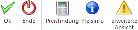

Wird in der Lagerbuchhaltung, der Belegerfassung oder in der Produktion ein Artikel angesprochen, welcher als Hauptartikel mit Ausprägungen gekennzeichnet wurde, dann öffnet sich nach Eingabe der Artikelnummer automatisch das Fenster "Ausprägungen erfassen". In diesem können bestehende Ausprägungen (z.B. Farben, Größen, Identnummern, etc.) ausgewählt oder neue Ausprägungen (z.B. neue Chargennummern) erfasst werden.
Hinweis
Das Fenster "Ausprägungen erfassen" wird nicht geöffnet, wenn lt. Aufteilungsoptionen (WinLine FAKT - Stammdaten - Ausprägungen - Aufteilungsoptionen) ein Ausprägen nicht erfolgen darf.

Das "Ausprägungen erfassen" ist in folgende Register unterteilt, welche in den nachfolgenden Kapiteln beschrieben werden:
ü Register "Ausprägungen" (normale
Ansicht)
Die Ausprägungen werden tabellarisch untereinander aufgeführt.
Welche Informationen bzw. Ausprägungen hierbei angezeigt werden und ob eine
Neuanlage von Ausprägungen möglich ist, wird über eine Vorlage definiert.
ü Register "Ausprägungen" (erweiterte
Ansicht)
Die erweiterte Ansicht wird über den Button "erweiterte Ansicht"
aktiviert und stellt die Ausprägungen tabellarisch untereinander dar. Welche
Informationen bzw. Ausprägungen hierbei angezeigt werden kann durch
Einstellungen innerhalb des Fensters definiert werden.
ü Register "Tabelle" (normale
Ansicht)
Die Ausprägungen werden in Form einer Rastertabelle anzeigt,
wobei nur die Eingabe von Mengen möglich ist (d.h. keine Neuanlage von
Ausprägungen). Welche Ausprägungen hierbei angezeigt werden wird über eine
Vorlage definiert.
ü Register "Tabelle" (erweiterte
Ansicht)
Die erweiterte Ansicht wird über den Button "erweiterte Ansicht"
aktiviert und stellt die Ausprägungen in Form einer Rastertabelle dar, wobei nur
die Eingabe von Mengen möglich ist (d.h. keine Neuanlage von Ausprägungen).
Welche Ausprägungen hierbei angezeigt werden kann durch Einstellungen innerhalb
des Fensters definiert werden.
ü Ausprägungen erfassen - Register
"automatische Anlage"
Bei Chargen- und Identnummernartikel kann über
dieses Register eine Schnellanlage von Chargen- bzw. Identnummern
stattfinden.
Des Weiteren werden Sonderfunktionen der Belegerfassung in dem Kapitel Ausprägungen erfassen - Sonderfunktionen in der Belegerfassung erläutert.
Buttons

Ø Ok
Die Funktion des Buttons "Ok" ist abhängig vom jeweiligen Register:
ü Register "Ausprägungen" und
"Tabelle"
Beim Druck des Buttons "Ok" bzw. der Taste F5 wird das Fenster
geschlossen und die getätigten Eingaben übernommen.
Hinweis
Wenn in dem Feld "Suchbegriff"
eine Eingabe getätigt wurde und die anschließend eingegebene Menge gespeichert
werden soll, dann bewirkt das Drücken des Buttons "OK" bzw. der Taste F5 eine
Zwischenspeicherung. D.h. die Menge wird zwischengespeichert, das Feld
"Suchbegriff" geleert und der Fokus wird wieder auf dieses gelegt.
Sobald das
Feld "Suchbegriff" leer ist und ein Speichern durchgeführt wird, schließt sich
das Fenster "Ausprägungen erfassen" und alle bis dahin getätigten Eingaben
werden übernommen.
ü Register "automatische
Anlage"
Beim Druck des Buttons "Ok" bzw. der Taste F5 wird in das Register
"Ausprägungen" gewechselt und die neuen Chargen- bzw. Identnummern in der
Tabelle angezeigt (als neuangelegte Ausprägungen in grüner Schrift).
Ø Ende
Die Funktion des Buttons "Ende" ist abhängig vom jeweiligen Register:
ü Register "Ausprägungen" und
"Tabelle"
Durch Drücken des Buttons "Ende" bzw. der Taste ESC wird das
Fenster geschlossen und alle Eingaben verworfen.
ü Register "automatische
Anlage"
Durch Drücken des Buttons "Ende" bzw. der Taste ESC wird in das
Register "Ausprägung" gewechselt und keine Ausprägungen angelegt.
Ø Preisfindung (Register "Ausprägungen" und "Tabelle" - nur in Belegerfassung)
Je nach Art der Preisgestaltung (Ausprägungen haben einen eigenen Preisstamm oder verweisen auf den Hauptartikel) reagiert die WinLine unterschiedlich auf einen gedrückten Button "Preisfindung".
ü Ausprägungen verweisen auf den
Preisstamm des Hauptartikels
Wenn der Button "Preisfindung" gedrückt ist, so
wird nach Speichern und Schließen des "Ausprägungen erfassen"-Fensters die
Preisfindung des Hauptartikels erneut angestoßen, um eventuelle Mengenrabatte
aufgrund der "neuen" Gesamtmenge zu berücksichtigen.
Nur bei Lieferscheinen,
die auch als Auftrag gedruckt wurden, ist der Button immer inaktiv; d.h. die
Preisfindung wird nicht automatisch durchgeführt auch wenn die Option bei der
letzten Verwendung so eingestellt war.
ü Ausprägungen haben einen eigenen
Preisstamm
In den Belegstufen "Angebot" und "Auftrag" wird der Button
"Preisfindung" im Ausprägungsfenster bei Ausprägungen mit eigenem Preisstamm wie
folgt unterstützt:
ü Die Standardeinstellung bewirkt die Durchführung der Preisfindung (Button ist aktiviert), denn bei Ausprägungen mit eigenem Preisstamm wird davon ausgegangen, dass bei einer Aufteilung in der Stufe "Angebot" bzw. "Auftrag" der eigene Preis gilt.
ü Wird der Button "Preisfindung" deaktiviert, so wird der Preis des Hauptartikels verwendet. Zusätzlich bewirkt es die Beibehaltung eines im Beleg geänderten Preises, wenn die Ausprägung nachträglich (nach vorherigem Druck) ausgewählt wurde.
Hinweis
Die Einstellung für diesen Button, ob dieser gedrückt oder nicht gedrückt ist, wird benutzerspezifisch gespeichert (die zuletzt verwendete Einstellung). Da hier derselbe Button verwendet wird, sowohl bei Ausprägungen mit und ohne eigenen Preisstamm, wird die benutzerspezifische Einstellung zu beiden getrennt gespeichert.
Ø Preisinfo (Register "Ausprägungen" und "Tabelle" - nur in Belegerfassung)
Diese Funktion ist nur aktiv, wenn Ausprägungen mit eigenem Preisstamm im Ausprägungsfenster angezeigt werden.
Ist der Button "Preisinfo" gedrückt (wird benutzerspezifisch gespeichert), so wird bei einer Mengenänderung geprüft ob mehr als ein gültiger Preis vorhanden ist. Wenn dieses der Fall ist, dann wird das Fenster "Preisinfo" geöffnet und der gewünschte Preis kann aus der Preisinfo ausgewählt und in die Ausprägungstabelle übernommen werden.
Hinweis
Das Fenster für die "Preisinfo" wird jedoch nicht erneut geöffnet, wenn der aktuelle Preis bereits der gültige ist.
Beispiel
Mengenstaffelpreis ab einer Menge von 10 Stk.
ü Bei Eingabe von einer Menge von 15 Stk. wird das Fenster geöffnet und der Preis kann übernommen werden
ü Bei einer weiteren Eingabe einer (geänderten) Menge von 20 Stk. wird das Fenster nicht geöffnet, da der aktuelle Preis auch der gültige ist
Ø erweiterte Ansicht
Mit diesem Button kann zwischen einer "normalen" Ansicht und der "erweiterten" Ansicht umgeschaltet werden. Diese Einstellung wird benutzerspezifisch gespeichert.